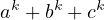
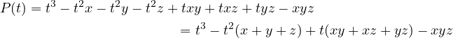

.
.
When dealing with polynomials, it is sometimes useful to introduce the idea of
Symmetric Polynomials. A Symmetric Polynomial is simply a polynomial that has
the same result no matter the order in which the input variables are given. The
simplest example would be the product of three variables and .

 , is often denoted as or sometimes . From this definition, you can
try to complete the listed elementary symmetric polynomials with a new one.
, is often denoted as or sometimes . From this definition, you can
try to complete the listed elementary symmetric polynomials with a new one.
 and
and  . It is often useful to represent symmetric equations using
elementary symmetric polynomials (more about this later).
. It is often useful to represent symmetric equations using
elementary symmetric polynomials (more about this later).
Something that holds a specific point of interest is the expressions of the form . For this specific problem there exists the Newton-Girard Formula for Symmetric Polynomials. Define a function in the following way.
Then, the theorem claims that there exists a recursive formula for calculating . The proof of the statement will not be provided here. Here, I will not be considering the formula for more than three variables, as mentioned earlier. The Newton-Girard Formula for three variables looks way simpler. Proving this statement is way much simpler than the general form of the Newton-Girard Formula.
Consider a simple inequality.
Notice, that this is a simple consequence of the Rearrangement Inequality. However, there exists another elegant solution that requires no knowledge of any inequalities. . We can prove this
by just substituting the definitions of and
. We can prove this
by just substituting the definitions of and  .
.  ) are the most useful ones. Using
these inequalities along with basic usage of other common inequalities can
help solve a variety of different problems. One might notice that most of
the techniques somehow transform an equation or inequality into a form
involving purely elementary symmetric polynomials and can ask the question:
what if such a form does not exist? Happily, for us, there is a theorem called
the Fundamental Theorem of Symmetric Polynomials, which claims that
any symmetric polynomial can, in fact, be expressed as an expression using
elementary symmetric polynomials (the theorem applies to any number of
variables). The proof of this statement will also not be provided here due to its
complexity.
) are the most useful ones. Using
these inequalities along with basic usage of other common inequalities can
help solve a variety of different problems. One might notice that most of
the techniques somehow transform an equation or inequality into a form
involving purely elementary symmetric polynomials and can ask the question:
what if such a form does not exist? Happily, for us, there is a theorem called
the Fundamental Theorem of Symmetric Polynomials, which claims that
any symmetric polynomial can, in fact, be expressed as an expression using
elementary symmetric polynomials (the theorem applies to any number of
variables). The proof of this statement will also not be provided here due to its
complexity.
Say we have three systems of symmetric equations as the following.
We want to find the value of , for example. First of all, transform the equations using elementary symmetric polynomials. Now from this we get that , and from the third equation we can find . From here, it is simple to extend our knowledge to calculate using the Newton-Girard Formula. However, this wasn’t really solving a system of symmetric equations; all that happened really was just applying the Newton-Girard Formula multiple times. Now, let us consider something harder. And again find . Do the same as last time: express the system using elementary symmetric polynomials. The problem of expressing symmetric polynomials through elementary symmetric polynomials has a solution; however, almost always, it is just simpler to notice patterns and try to factor and transform the equation on your own. Now all that is left is to solve for and . Now, a cool trick to keep in mind is that sometimes we are interested in finding such
a cubic polynomial
. Now, a cool trick to keep in mind is that sometimes we are interested in finding such
a cubic polynomial  such that are all roots of that polynomial. This
would be useful as from there we can immediately find the solution in the following
way.
such that are all roots of that polynomial. This
would be useful as from there we can immediately find the solution in the following
way. 
 . Expanding out the
expression, we get the following.
. Expanding out the
expression, we get the following. |  |
 . This
concludes the solution. What I want you to notice is that the whole idea of finding a
polynomial with roots
. This
concludes the solution. What I want you to notice is that the whole idea of finding a
polynomial with roots  is unnecessary; one could replace all the calculations
by simply calculating
is unnecessary; one could replace all the calculations
by simply calculating  through and . In fact, what was
just described is yet another proof or perspective on the Newton-Girard
Formula. Obviously, in such cases, using the Newton-Girard Formula directly
is best. However, if you forgot, you could always remember it using this
trick.
through and . In fact, what was
just described is yet another proof or perspective on the Newton-Girard
Formula. Obviously, in such cases, using the Newton-Girard Formula directly
is best. However, if you forgot, you could always remember it using this
trick.